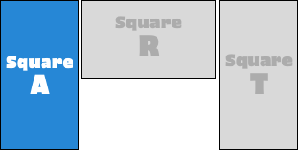

Seciton 1 |
Seciton 2 |
Seciton 3 |
|---|
국악장터: “영감의 장끼타령”
MZ 사장들이 만드는 국악 아이디어 상점

멈출 수 없는 스피드로 몰아가는 자진모리 축구화부터, 주거니 받거니 하고 싶은 달콤한 맛, 들강달강 밤 티라미수까지. 국악 용어의 가능성을 실험하기 위해 MZ들이 사장으로 나섰습니다. 30인의 젊은 디자이너들이 “국악 표제어가 우리 삶 곳곳에 스며들면 어떤 모습일까?” 질문을 던지고 각기 다른 해답을 찾아 여러분을 위한 국악장터를 오픈했다고 하는데요. 당대에는 불가능해 보였던 꿈을 특유의 긍정적인 에너지로 실현했던 장끼타령의 까투리같이, 표제어에 대한 깊이 있는 이해를 바탕으로 재치 있는 아이디어를 펼치는 MZ들의 국악장터에서 표제어 쇼핑을 즐겨보세요.